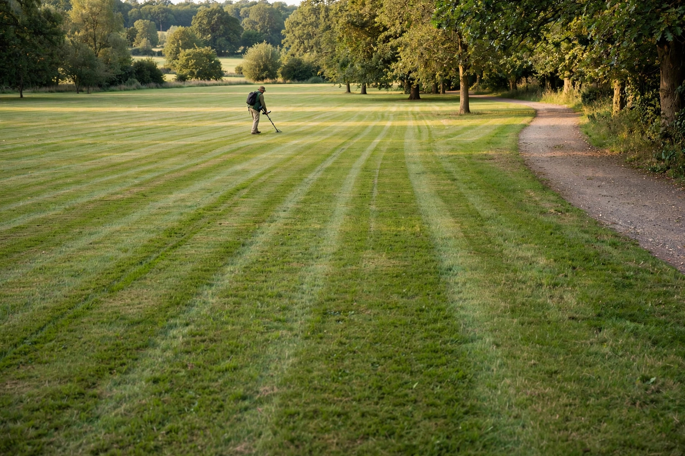

Gridding a site: swing technique and real coverage

Most missed finds are not deep, rare or cleverly hidden. They were never swung over. A detector only hears the strip of ground its coil actually passes across, and the way most beginners search — wandering toward whatever looks promising, swinging as they go — leaves that strip full of holes: unswept patches between turns, lanes that drift apart, ground covered twice in one place and never in another. Gridding is the fix, and it is a system rather than a talent: lanes sized to your coil, a step rule that guarantees overlap, a decision about when a site deserves the full treatment, and a second pass only where the finds have earned it. This guide builds that system step by step, including how to run it on public ground where you cannot mark anything out.
Why random wandering leaves strips behind
The geometry is unforgiving. Your coil hears a strip roughly its own width as you walk. Turn too early and the strip bends, leaving a wedge of unheard ground outside the turn. Drift sideways between passes and two strips that looked adjacent actually have a silent lane between them. Speed up and the swing widens while the steps lengthen, so the overlap that protected the last lane quietly disappears. None of this shows up as an obvious failure on the day — the machine beeps, targets come up, the hunt feels productive. The cost only becomes visible when someone slower searches the same ground afterwards and finds what was sitting in the gaps. Planning a pattern before covering an area is what stops sections being missed or covered twice, and a grid — even one held only in your head — is the pattern that does it.
Lane width starts with your coil
A grid lane is one walking pass, and its honest width is set by the coil, not by ambition. Work to this sizing:
| Pass style | Lane advance per pass | When to use it |
|---|---|---|
| Scout pass | Wider than the coil — gaps accepted on purpose | Testing an unproven area quickly |
| Standard grid | About one coil width, with each swing overlapping the last | A site that has shown it deserves full coverage |
| Careful grid | Roughly half a coil width of advance | A proven, productive patch — the 50 percent overlap careful prospecting practice uses |
The step rule matters as much as the lane rule. Long-time detecting coach Neil Jones, in an interview on detecting depth myths, puts overlap in terms of feet rather than coils: overlapping means advancing by putting one foot in front of the other — a short step — not taking a full stride. A full stride between sweeps moves the coil past ground it never covered, no matter how wide the swing looked. Short steps feel slow for the first ten minutes and then become the rhythm of the hunt.
Scout first, grid second: the decision
Gridding everything is as much a mistake as gridding nothing, because a thorough grid is slow and most ground has not earned it. Metal Detector SA's guide to searching large areas makes the point directly: a grid is not recommended when scouting. On an unproven area, pass through quickly and freely first. Then decide:
- Nothing at all came up — move on. Thorough coverage of barren ground is just a slower way to confirm it.
- One or two good finds appeared — the area has earned a grid. Switch to parallel lanes and cover it completely, starting around where the finds came from.
- Finds keep coming inside the grid — tighten to the careful pass, and consider the second direction described below.
That decision — scout, then commit or walk away — is what makes gridding sustainable for a beginner. The grid stops being a chore applied everywhere and becomes the reward a good patch gets.
How to grid a site, step by step
- Pick a block, not the whole site. Divide the area into one manageable block at a time — a section of park, one end of a field — and finish blocks completely rather than roaming between them. A sketch of the grid, even a rough one, helps you plan the shortest complete route.
- Choose your lane direction. Long, straight lanes along the block's longest edge mean fewer turns, and every turn is a place gaps open up.
- Walk the first lane slowly, swinging the coil in front of you, keeping it parallel to the ground and overlapping each swing over the previous one as you advance in short steps.
- At the end of the lane, sidestep one lane width and walk back in the opposite direction, overlapping the edge of the lane you just covered. Back and forth, boustrophedon-style, until the block is done.
- Dig targets as you meet them, then re-sweep the hole and the plug before moving on — a lane is not covered until the digging it produced is finished and the ground is restored.
- Note where the finds clustered. The block's productive corner is where a tighter pass or a second direction will pay; the empty corner is done.
On private land with the landowner's agreement, the meticulous version of this uses physical guides: stakes or even kebab sticks pushed into the ground, joined with string, or marked with coloured tape, so each lane has a visible edge. That method comes from mine-clearance practice, and on your own permission it removes all guesswork. Most beginner hunting, though, happens on shared ground — which is what the next section is for.
The no-markers grid for public ground
In a public park, string lines are impractical and stakes are worse. The grid still works; it just runs on reference points instead of hardware. Use fixed landmarks as lane edges — a path, a fence line, a row of trees, the shadow line of a hedge — and pick a visible object at the far end of each lane to walk toward, which keeps the lane straight. Let your own footprints in damp grass or sand be the record of covered ground, and work in blocks small enough that you can always see the whole block's boundary at a glance. Where there are no landmarks, detect toward a single distant feature and treat each return lane's edge as the last line of your own tracks. It is less exact than string, and deliberately so: slightly generous overlap between lanes is the price of having no markers, and it is cheap insurance.
Swing faults that reopen the gaps
A grid drawn perfectly can still leak through the swing itself. Three faults do most of the damage. The first is lifting the coil at the ends of the arc — the pendulum swing — where the coil climbs as it reaches each side, so the edges of every strip are searched shallower than the middle. Jones's advice is blunt: slide the coil flat along the surface, do not hover, and do not lift it at the end of the swing; the coil cover exists to be worn out. The second fault is swing speed. Keep a slow, consistent swing and overlap the sweeps: a fast swing loses targets outright, quite apart from the coverage it skips. The third is the long stride already covered — walking further between sweeps than the coil can account for. Flat, slow, short steps: that combination is the whole technique, and everything else is bookkeeping.
One practice setting is worth knowing for a proven patch. Jones suggests picking a small area — about a 30-foot square — and detecting it in gridding fashion while digging the obvious non-ferrous signals, clearing the modern coins and trash out of the way. On ground that has already produced, that small, complete block teaches the pace better than any description, and what comes out of a fully cleared square is usually a surprise.
When a second pass earns its time
When a block has produced well, searching it again at right angles to the first pass — or diagonally across it — very often produces more finds. Targets present differently depending on the direction the coil crosses them, and a lane system always leaves its weakest coverage along its own geometry, so the perpendicular pass is genuinely new ground to the coil. But it doubles the time on that block, so let the finds decide: a block that gave up several good targets has earned its second direction; a block that gave up one coin and some foil has not. Second passes are a reward for productive ground, not a ritual for all ground.
What success looks like
Success looks boring from a distance and satisfying up close: straight lanes, short steps, a block finished completely before the next begins. You can point to exactly which ground has been searched and which has not, and the boundary is real rather than a feeling. Finds start coming from places a wandering hunt would never have crossed — the middle of unremarkable blocks, the lane beside the path everyone else hammered. And when a site stops producing, you can say the most useful sentence in the hobby with a straight face: that ground has actually been covered.
FAQ
How wide should my swings be? Wide enough that each sweep overlaps the last as you advance. The lane you walk is about a coil wide on a standard pass; it is the overlap and the short step, not the swing's width alone, that guarantee coverage.
Isn't gridding too slow for a short hunt? Grid the block, not the site. One small block covered completely in an hour beats a whole park sampled in the same hour — and the scout-then-grid decision means you only spend that hour where the ground has shown something.
Do I need to mark lanes out? On private land, stakes and string work well. On public ground, use landmarks, a distant aiming point for straight lanes, and your own tracks as the record — with a little extra overlap to cover the imprecision.
Why search the same ground from another direction? Because a target's response changes with the direction the coil crosses it, and a second pass at right angles reaches the first pass's weakest strips. Reserve it for blocks that produced well the first time.
Site rules and permissions vary by place, and park rules may limit digging or detecting altogether. This guide is general information about search technique — always check local laws and get permission before detecting on any land.